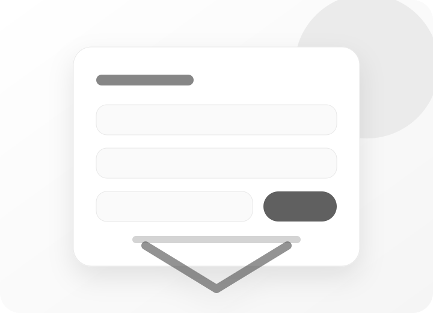

FAQ
접수 전에 자주 묻는 질문을 정리했습니다
기본적인 제작 문의부터 일정, 비용, 운영, 기술 범위처럼 상담 전에 궁금할 수 있는 내용을 단계별로 정리했습니다. 답변을 확인한 뒤 필요한 범위가 보이면 접수 페이지로 남겨주세요.

기본 질문
홈페이지 제작을 처음 맡겨도 진행할 수 있나요?
가능합니다. 처음 제작하는 경우에는 페이지 수보다 먼저 “누가 보고, 무엇을 이해하고, 어디로 문의해야 하는지”를 정리하는 것이 중요합니다. NOVAWORK는 사업 소개, 서비스 설명, 문의 동선을 먼저 잡고 필요한 페이지 범위를 제안합니다.
어떤 종류의 사이트를 만들 수 있나요?
기본 회사 홈페이지, 서비스 소개 페이지, 광고용 랜딩페이지, 상담 신청형 페이지, 기존 사이트 리뉴얼, 운영 유지관리형 사이트를 중심으로 진행합니다. 복잡한 회원 시스템이나 대규모 쇼핑몰보다 문의 전환 중심의 사업용 웹사이트에 맞춰져 있습니다.
제가 준비해야 할 자료는 무엇인가요?
준비 자료가 많을수록 제작이 빨라지지만, 처음부터 전부 갖출 필요는 없습니다.
- 사업 소개와 핵심 서비스 설명
- 로고, 대표 이미지, 사용할 사진
- 참고하고 싶은 사이트 주소
- 받고 싶은 문의 항목과 연락 방식
자료가 부족해도 접수할 수 있나요?
가능합니다. 자료가 부족한 경우에는 상담 단계에서 꼭 필요한 문장과 섹션부터 함께 정리합니다. 다만 로고, 사진, 세부 문구가 늦게 준비되면 전체 일정도 함께 늘어날 수 있습니다.
비용과 일정
제작 기간은 얼마나 걸리나요?
페이지 수, 자료 준비 상태, 수정 범위, 문의폼 여부에 따라 달라집니다. 기본 소개형은 비교적 짧게 진행할 수 있고, 회사소개·서비스·제작 예시·접수 페이지까지 포함되면 일정이 늘어납니다. 정확한 일정은 접수 내용 확인 후 안내합니다.
예산이 아직 정해지지 않아도 접수할 수 있나요?
가능합니다. 예산이 미정이면 필요한 페이지와 기능을 먼저 확인한 뒤, 지금 바로 필요한 범위와 나중에 확장해도 되는 범위를 나눠 안내합니다. 무리하게 큰 범위로 시작하기보다 실제 운영에 필요한 구조부터 잡는 편이 좋습니다.
가격은 어떤 기준으로 달라지나요?
주요 기준은 페이지 수, 섹션 수, 문의폼 연결 여부, 원고 정리 범위, 이미지 준비 상태, 도메인·호스팅 연결 지원, 오픈 후 수정 범위입니다. 단순히 “몇 페이지”만 보는 것이 아니라 실제로 정리해야 할 콘텐츠와 운영 난이도를 함께 봅니다.
빠르게 오픈해야 하는 경우도 가능한가요?
가능한 범위 안에서 우선순위를 줄여 진행할 수 있습니다. 급한 일정이라면 전체 기능을 한 번에 넣기보다 메인 메시지, 핵심 서비스, 접수 동선부터 먼저 오픈하고 이후 보완하는 방식이 현실적입니다.
제작 범위와 운영
도메인과 호스팅 연결도 도와주나요?
기본적인 도메인·호스팅 연결 지원이 가능합니다. 이미 사용 중인 도메인이나 호스팅이 있다면 접수 시 함께 남겨주세요. 새로 준비해야 한다면 운영 방식에 맞는 준비 항목을 안내합니다.
문의폼도 연결할 수 있나요?
가능합니다. 이름, 연락처, 이메일, 필요한 서비스, 예산, 일정, 상세 내용처럼 상담에 필요한 항목을 정리해 문의폼으로 받을 수 있습니다. 접수된 내용이 어디로 전달될지도 함께 확인합니다.
검색 노출을 위한 기본 세팅도 포함되나요?
페이지 제목, 설명, 공유 이미지, 기본 메타 정보처럼 정적 웹사이트에서 필요한 기본 SEO/OG 세팅을 진행할 수 있습니다. 다만 검색 순위 보장이나 광고 운영 대행은 별도 범위로 봐야 합니다.
오픈 후 수정이나 유지관리도 가능한가요?
가능합니다. 문구 수정, 이미지 교체, 배너 변경, 간단한 섹션 보완 등은 유지관리 범위로 협의할 수 있습니다. 반복적인 운영 수정이 필요하다면 월 단위 관리 기준으로 범위를 정하는 것이 좋습니다.
조금 더 복잡한 질문
기존 홈페이지를 그대로 두고 일부만 리뉴얼할 수 있나요?
가능 여부는 기존 사이트 구조에 따라 달라집니다. 문장과 섹션만 정리하면 되는 경우도 있고, 오래된 구조 때문에 새로 제작하는 편이 더 안정적인 경우도 있습니다. 현재 사이트 주소를 남겨주시면 먼저 점검 기준을 안내합니다.
나중에 페이지나 기능을 추가할 수 있게 만들 수 있나요?
처음 제작할 때 섹션 구조와 파일 구성을 확장 가능하게 잡으면 이후 페이지 추가가 더 수월합니다. 다만 예약 시스템, 결제, 회원 기능처럼 성격이 다른 기능은 별도 개발 범위가 될 수 있습니다.
디자인보다 문의 전환을 우선으로 잡는다는 게 무슨 뜻인가요?
방문자가 예쁜 화면을 보는 것에서 끝나지 않고, 어떤 서비스인지 이해한 뒤 문의할 수 있도록 정보 순서를 설계한다는 뜻입니다. 첫 화면의 핵심 문장, 서비스 설명, 신뢰 요소, 반복 CTA, 접수 폼까지 하나의 흐름으로 봅니다.
정적 HTML/CSS/JS 사이트와 관리자 페이지가 있는 사이트는 무엇이 다른가요?
정적 사이트는 비교적 가볍고 빠르게 제작할 수 있지만, 직접 관리자 화면에서 콘텐츠를 수정하는 구조는 아닙니다. 공지·게시판·회원·결제처럼 관리자 기능이 필요한 경우에는 개발 범위와 운영 방식이 커지므로 별도로 검토해야 합니다.
NEXT STEP
답변을 확인했다면 필요한 범위를 접수해 주세요
정확한 견적과 일정은 업종, 페이지 수, 기능, 자료 준비 상태를 확인한 뒤 안내드립니다.